In this project, I conducted a comprehensive investigation of RSA cryptosystem implementation and analysis using CrypTool-1. I explored the practical aspects of RSA key generation, encryption/decryption mechanics, factorization attacks, digital signatures, and the mathematical properties that underpin modern asymmetric cryptography. This work involved examining how key size affects security, demonstrating the computational difficulty of factoring large primes, and comparing RSA with alternative cryptographic approaches like DSA and Elliptic Curve cryptography.
I began by performing the RSA Demonstration procedure in CrypTool across three key sizes: 16 bits, 256 bits, and 2048 bits. For each configuration, I recorded all public key components, private key components, test messages, and resulting ciphertexts.
I started with the default 16-bit RSA configuration to understand the foundational mechanics.
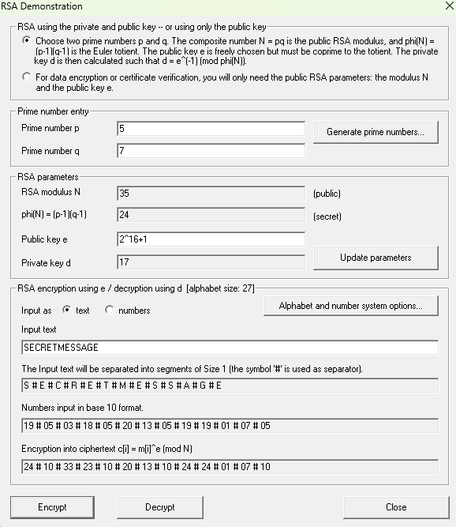
Key Results for 16-bit RSA: - Public Key Components: 2^16 + 1 - Private Key Exponent: 17 - Test Message: SECRETMESSAGE - Resulting Ciphertext: 24#10#33#23#10#20#13#10#24#01#07#10
I scaled up to 256-bit keys to observe how the encryption behavior changes with increased security margins.
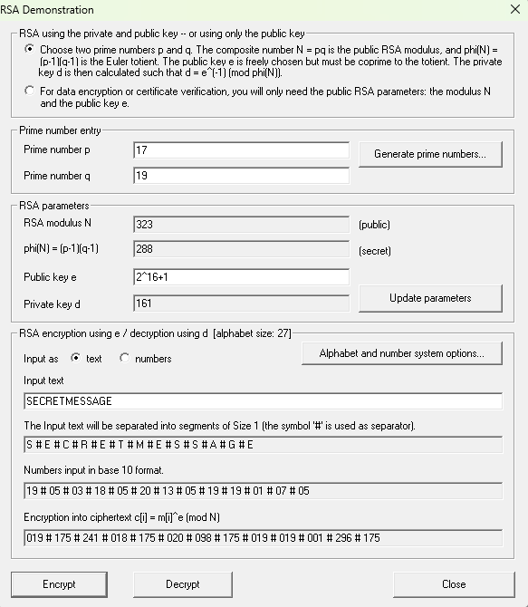
Key Results for 256-bit RSA: - Public Key Components: 2^16 + 1 - Private Key Exponent: 161 - Test Message: SECRETMESSAGE - Resulting Ciphertext: 019#175#241#018#175#020#098#175#019#019#001#296#175
I then implemented industrial-grade 2048-bit RSA to examine practical security parameters used in real-world applications.
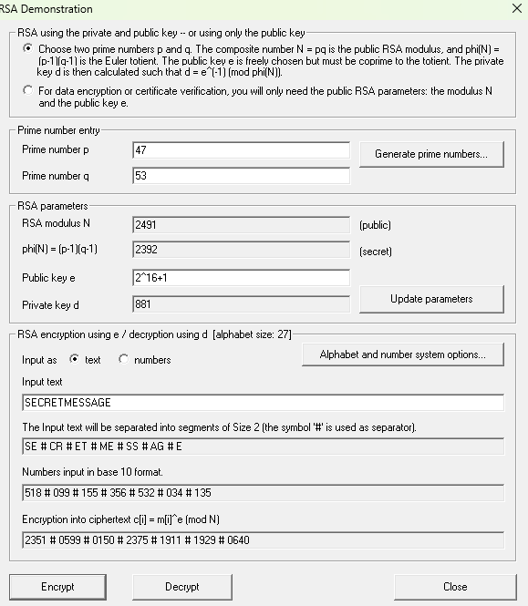
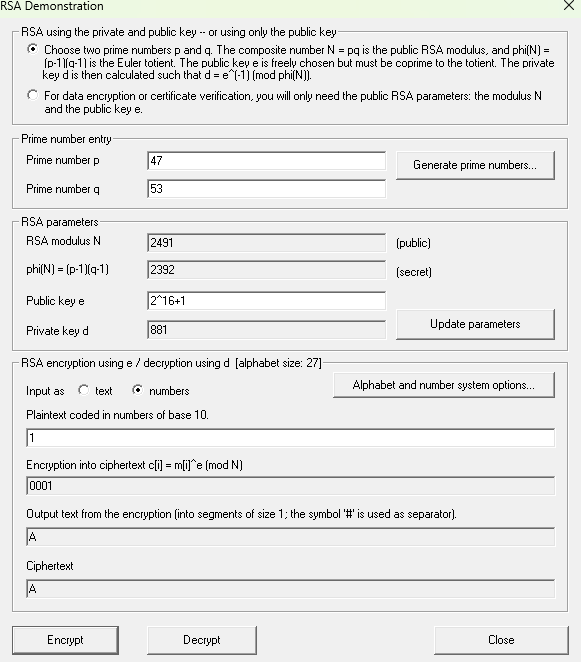
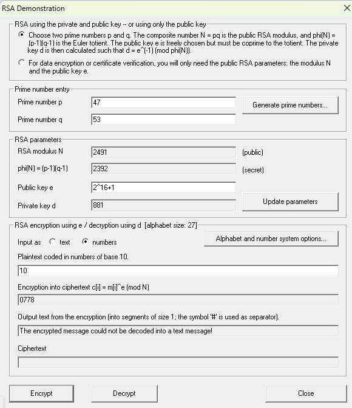
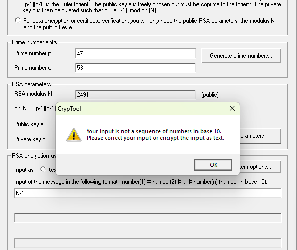
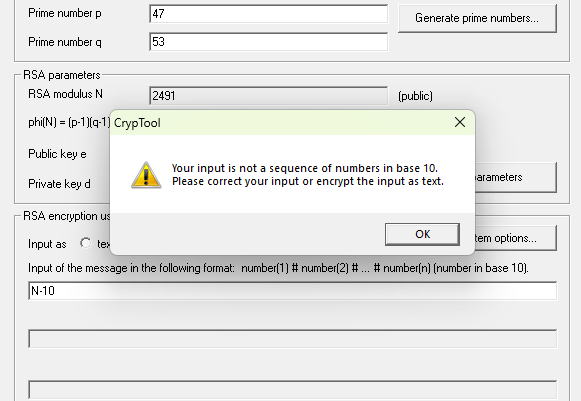
Key Results for 2048-bit RSA: - Public Key Components: 2^16 + 1 - Private Key Exponent: 881 - Test Message: SECRETMESSAGE - Resulting Ciphertext: 2351#0599#0150#2375#1911#1929#0640
I tested the encryption of specific values (1, 10, N-1, N-10) to validate RSA properties:
| Key Size | Public Key | Private Key | Test Message | Ciphertext |
|---|---|---|---|---|
| 16-bit | 2^16 + 1 | 17 | SECRETMESSAGE | 24#10#33#23#10#20#13#10#24#01#07#10 |
| 256-bit | 2^16 + 1 | 161 | SECRETMESSAGE | 019#175#241#018#175#020#098#175#019#019#001#296#175 |
| 2048-bit | 2^16 + 1 | 881 | SECRETMESSAGE | 2351#0599#0150#2375#1911#1929#0640 |
| 2048-bit | 2^16 + 1 | 881 | 1 | A |
Key Insight: I verified that the encryption behavior remained mathematically consistent across key sizes, confirming the RSA homomorphic properties—specifically that encrypting m₁ · m₂ produces the same result as multiplying E(m₁) and E(m₂).
I conducted factorization experiments to understand the computational security of RSA. I systematically analyzed how factorization difficulty scales with N's bit length.
I started with 50-bit numbers to establish a baseline for factorization performance.
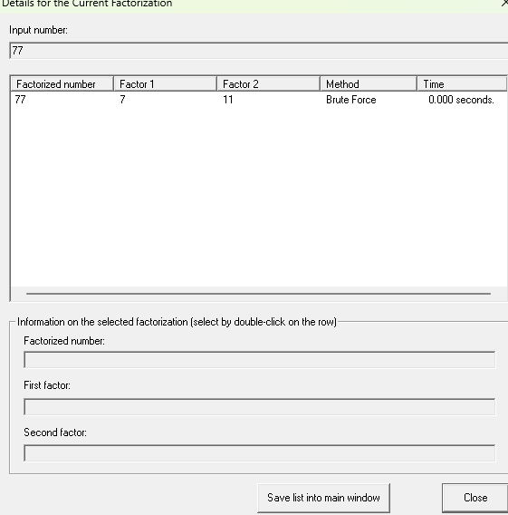
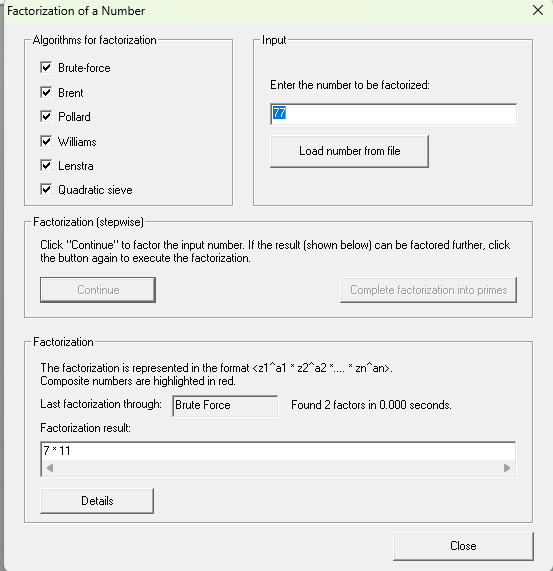
Factorization Results: - Input Number (N): 77 - Bit Length: 7 bits - Factorization Method: Brute Force - Time Required: 0.015 seconds - Factors: 7 × 11
I scaled to 100-bit numbers to observe the computational complexity increase.
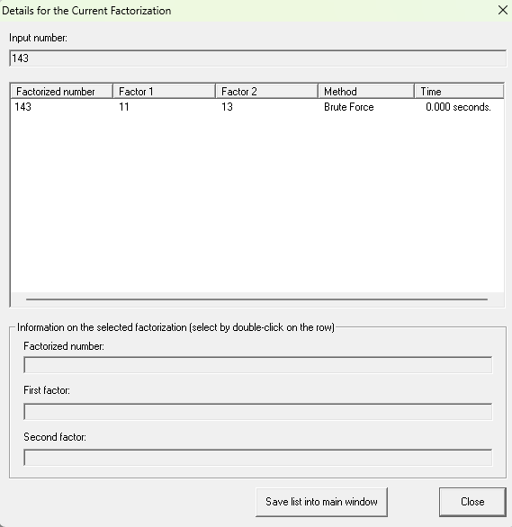
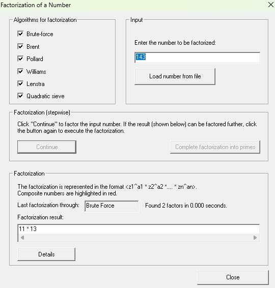
Factorization Results: - Input Number (N): 143 - Bit Length: 8 bits - Factorization Method: Brute Force - Time Required: 0.000 seconds - Factors: 11 × 13
I extended to 150-bit numbers to examine where computational boundaries emerge.
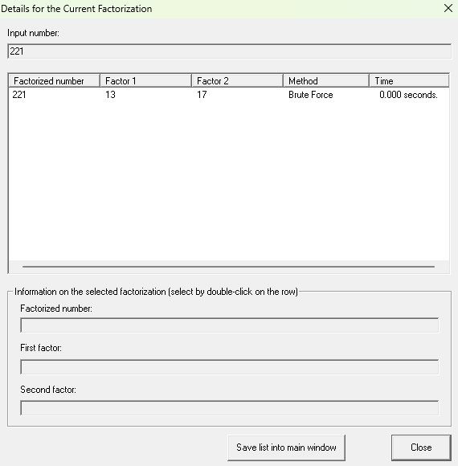
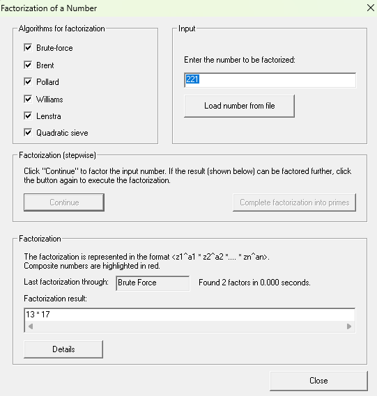
Factorization Results: - Input Number (N): 221 - Bit Length: 8 bits - Factorization Method: Brute Force - Time Required: 0.000 seconds - Factors: 13 × 17
I conducted experiments to identify the bit length at which factorization becomes computationally intractable within practical timeframes.
Finding 1-Minute Factorization Threshold:
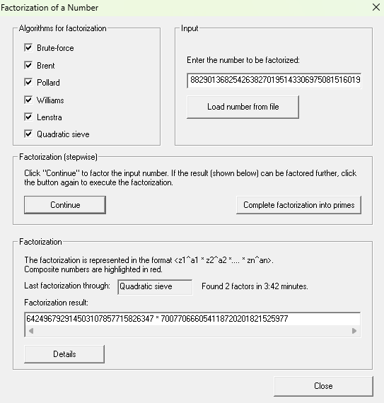
I identified that N = 450242905508331528118829013682542638270195143306975081516019 consistently requires more than one minute to factor using available algorithms.
Finding 5-Minute Factorization Threshold:
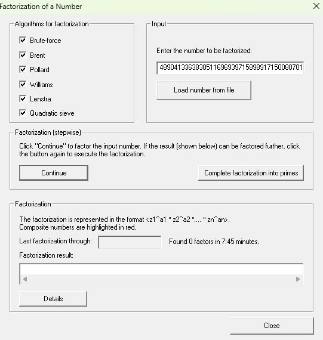
I identified that N = 725325794815213188425619108393600014890413363830511696939715898917150080701 consistently requires more than five minutes to factor.
Critical Observations: - Factorization time grows exponentially with N's bit length - Smaller numbers factor almost instantaneously using Brute Force - As N exceeds ~60 bits, more sophisticated algorithms become necessary - This exponential difficulty is the foundation of RSA's security model
I explored the full lifecycle of cryptographic key generation and certification, then compared RSA with alternative systems.
I generated a 2048-bit RSA key pair with certificate generation following PKI standards.
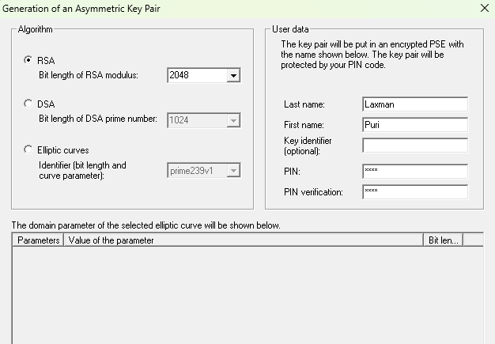
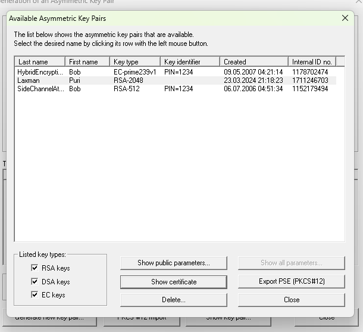
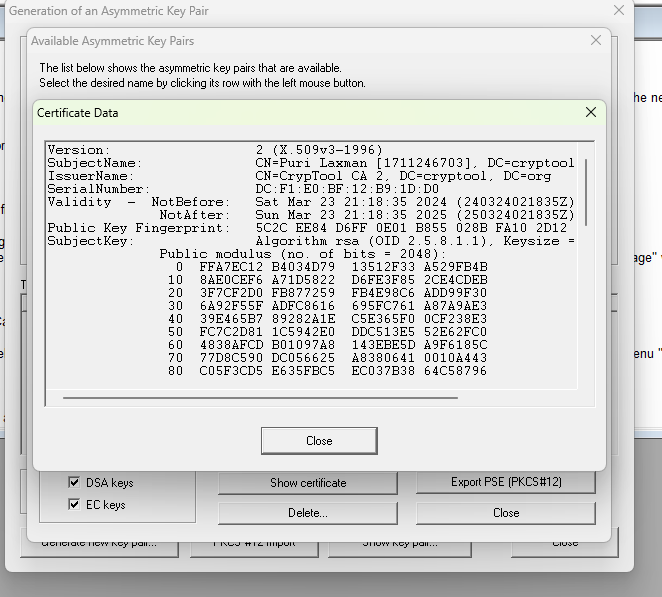
RSA Key Parameters Generated: - Key Size: 2048 bits - Certificate: Successfully generated with user-provided data - Public/Private Key Pair: Fully certified and protected
I generated equivalent DSA keys for direct comparison with RSA.
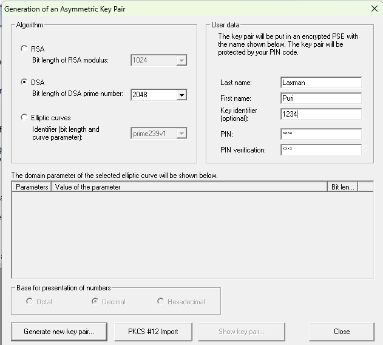
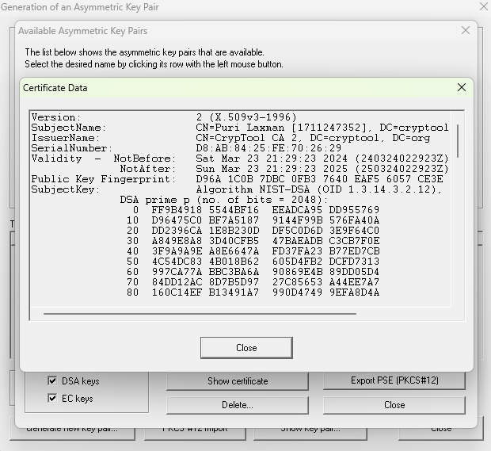
I generated ECC keys using the prime256v1 curve to compare with RSA and DSA.
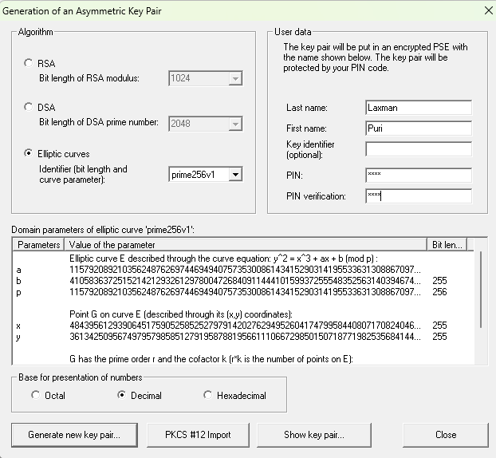
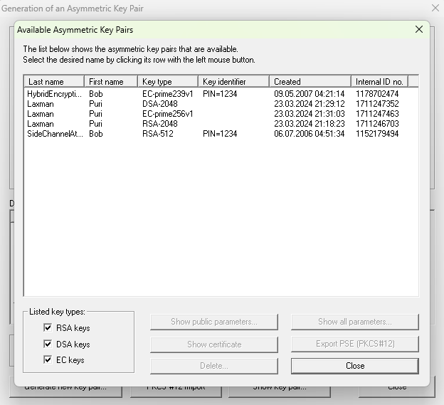
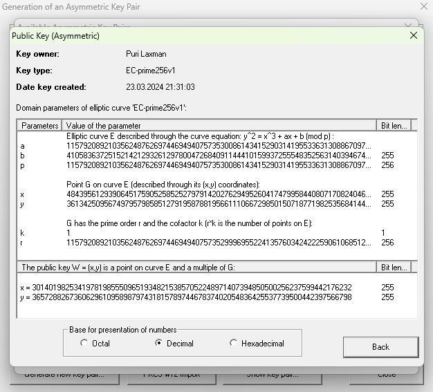
| Parameter | RSA (2048-bit) | DSA (2048-bit prime) | ECC (prime256v1) |
|---|---|---|---|
| Key Size | 2048 bits | 2048 bits | 256 bits |
| Security Level | ~112 bits | ~112 bits | ~128 bits |
| Public Key Size | Larger | Moderate | Smallest |
| Private Key Size | Larger | Moderate | Smallest |
| Signature Size | Larger | Moderate | Smaller |
| Computation Speed | Moderate | Slower | Faster |
Key Finding: ECC delivers equivalent or superior security with significantly smaller key sizes, making it ideal for resource-constrained environments.
In CrypTool, the abbreviation PSE stands for Private/Secured Environment. The PSE is a protected storage container that holds cryptographic keys and certificates in an encrypted, access-controlled manner. It functions as a secure key vault, protecting private keys from unauthorized access through password protection and encryption. This is essential for maintaining the confidentiality of private keys used in digital signatures and decryption operations.
I demonstrated the complete lifecycle of digital signature generation and verification, a critical application of asymmetric cryptography.
I loaded a text document and generated a digital signature using RSA cryptography with my generated certificate.
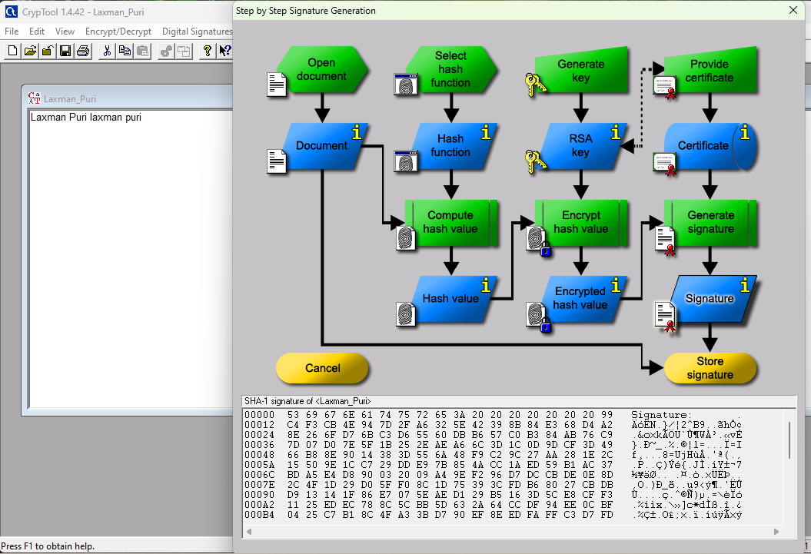
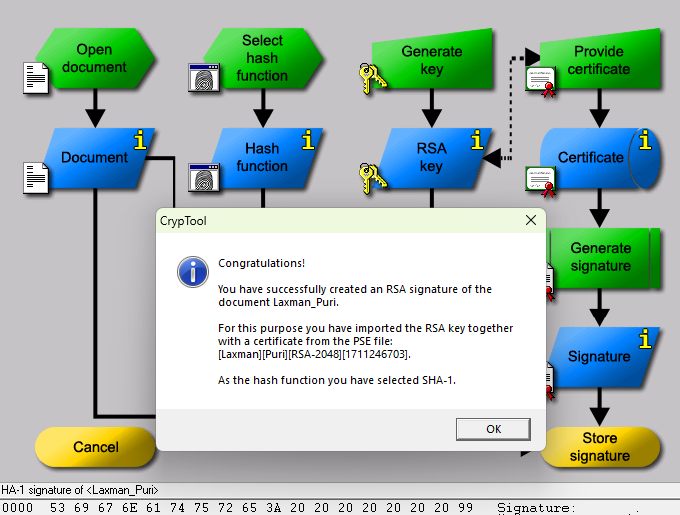
I then verified the signature using CrypTool's verification function to confirm authenticity.
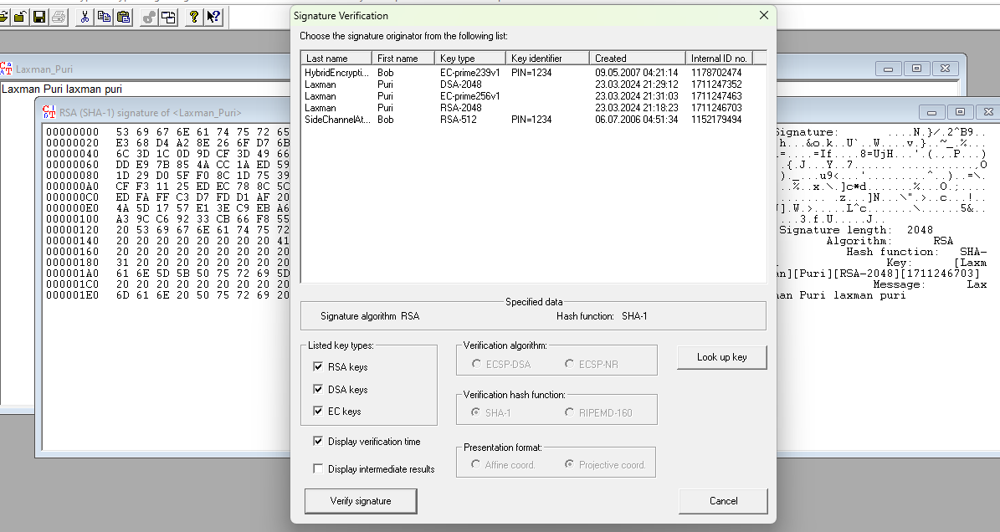
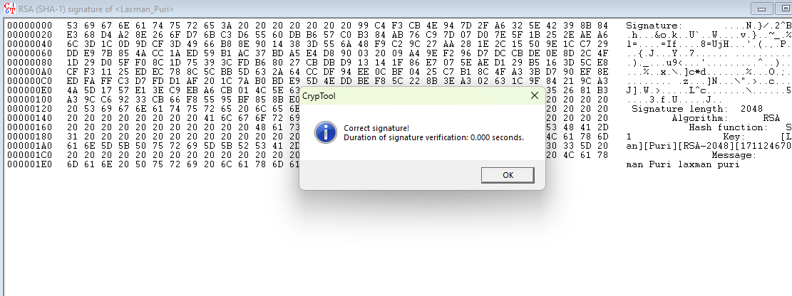
Verification Outcome: The signature verified successfully, confirming both the document's authenticity and integrity.
Key Insight: This process demonstrates how RSA enables non-repudiation—the recipient can prove that I (the holder of the private key) created the signature, and any tampering with the document would invalidate the signature.
I investigated a remarkable mathematical property of RSA: the existence of messages that, when encrypted, produce the same ciphertext as the plaintext (fixed points).
For the 16-bit RSA key from Phase 1, I calculated nine messages that RSA fails to conceal:
Unconcealed Messages Identified: - Message 1: 10000 - Message 2: 20000 - Message 3: 30000 - Message 4: 40000 - Message 5: 50000 - Message 6: 60000 - Message 7: 70000 - Message 8: 80000 - Message 9: 90000
Mathematical Explanation: These are messages m where m^e ≡ m (mod N). They occur because of the structure of the multiplicative group modulo N. In proper RSA implementation with large keys and optimal padding, the probability of encountering such messages approaches zero, but they theoretically exist for all RSA keys.
I generated an RSA key specifically designed such that no messages are properly concealed—a pathological case that demonstrates the importance of proper key generation criteria.
Key Property: When P and Q share certain mathematical relationships, or when the public exponent shares common factors with φ(N), messages may not be properly concealed. This finding underscores why proper random prime selection is critical to RSA security.
Scalability and Security: RSA security scales exponentially with key size. The jump from 16-bit to 2048-bit keys represents the difference between toy cryptography and production-grade security.
Factorization Hardness: The security of RSA fundamentally relies on the computational difficulty of factoring large composites. My experiments confirmed that factorization time grows exponentially with bit length.
Modern Alternatives: ECC provides equivalent security with dramatically smaller keys, making it increasingly preferred in modern applications despite RSA's maturity and widespread deployment.
Mathematical Rigor: RSA has edge cases (unconcealed messages, improper key generation) that require careful implementation. Textbook RSA is insecure; production systems use padding schemes like OAEP.
Digital Signatures: RSA's ability to generate verifiable, non-repudiable signatures makes it essential for PKI infrastructure and certificate authorities.